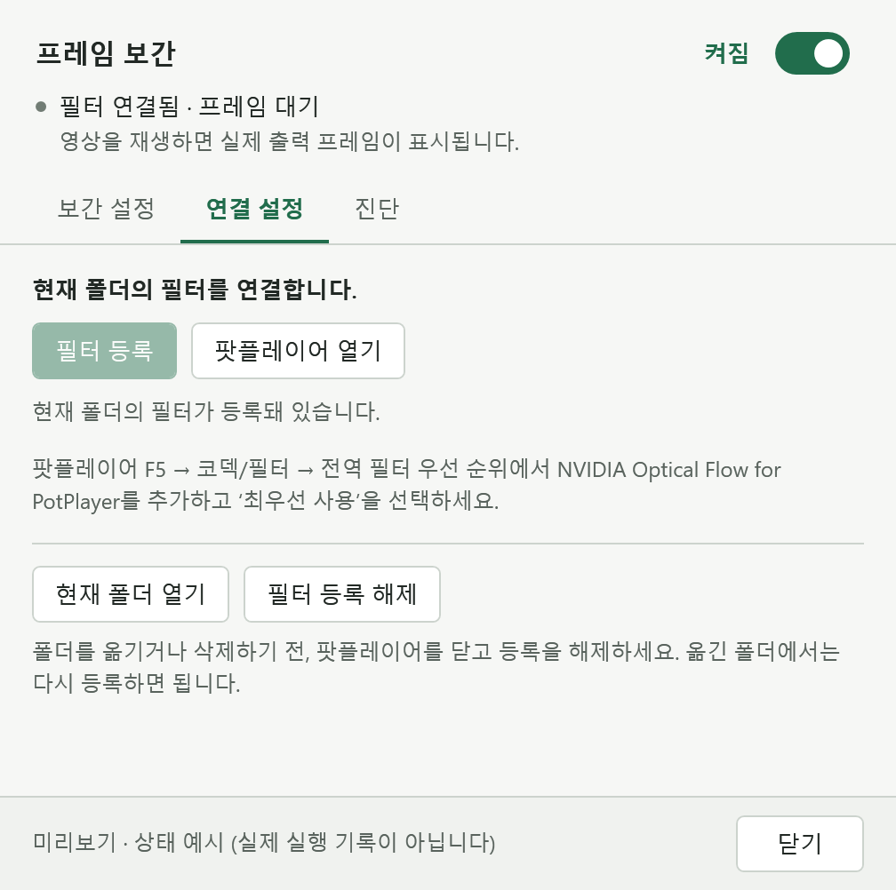
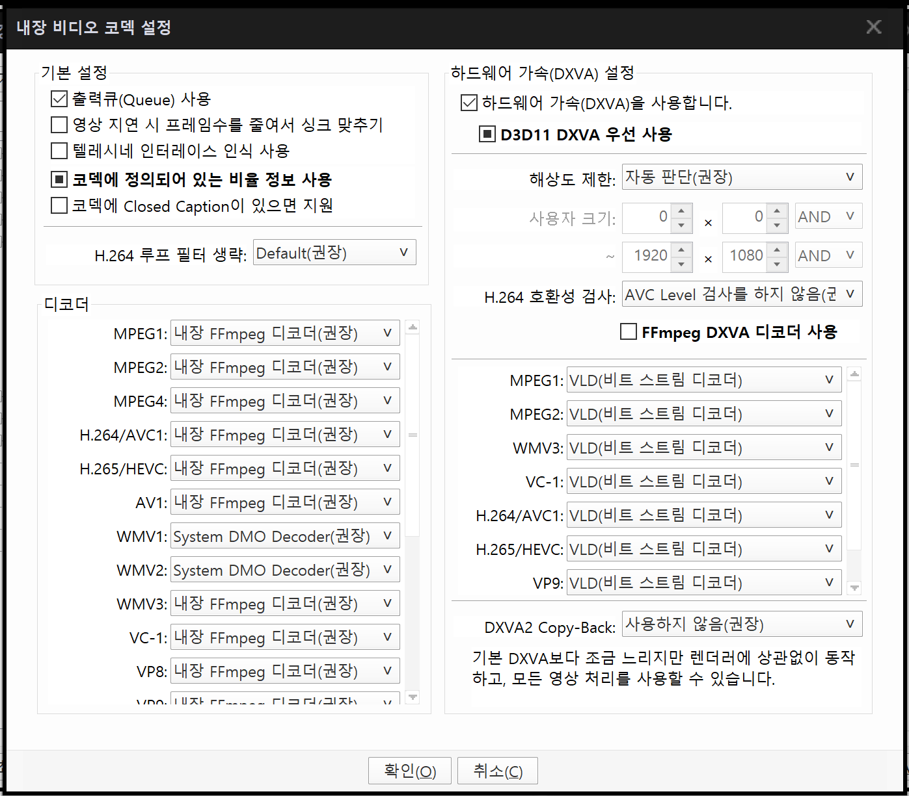
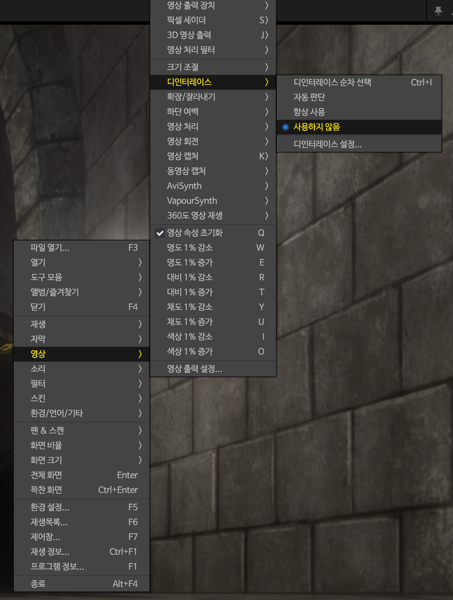
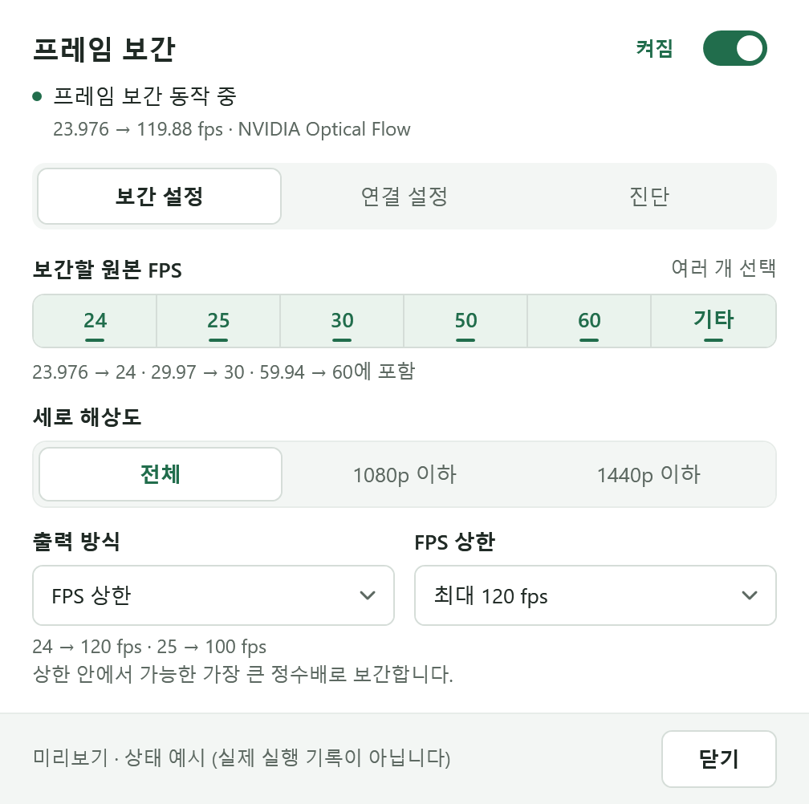
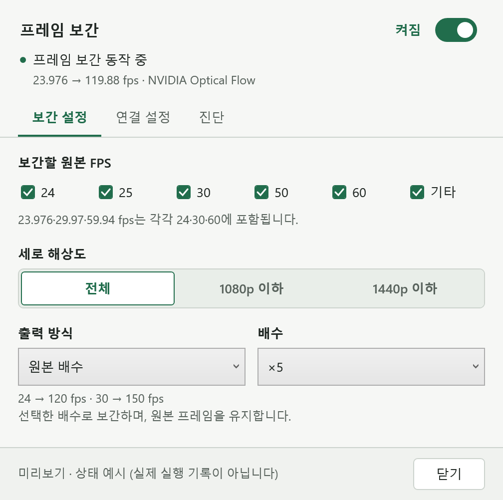

NVOF 사용 설명서
팟플레이어에서 영상을 더 부드럽게.
압축을 풀고 한 번만 연결하면, 선택한 영상에 정수배 보간을 적용합니다.
v0.4.4 · CPU 10bit 보간과 VP9 HDR 지원
소프트웨어로 디코딩한 10bit 영상도 GPU에서 보간합니다. 인터레이스 영상은 팟플레이어 디인터레이스 설정을 먼저 확인하세요.
시작하기 전에
- Windows 10 2004 이상 또는 Windows 11, x64
- 팟플레이어 x64
- Optical Flow를 지원하는 NVIDIA GPU와 드라이버
실제 재생 검증은 RTX 5090에서 진행했습니다. 처리 가능한 해상도와 출력 FPS는 GPU와 재생 설정에 따라 달라집니다.
필터·설정창·.NET/WPF 런타임이 ZIP에 들어 있습니다. .NET이나 CUDA Toolkit을 별도로 설치할 필요가 없습니다. 팟플레이어와 NVIDIA 드라이버는 따로 준비하세요.
압축 풀고 시작하기
스탠드얼론 ZIP NvofPotPlayer-0.4.4-win-x64.zip에 필터·설정창·필요한 런타임을 함께 제공합니다.
계속 사용할 폴더에 압축을 풉니다
실행 파일·필터·런타임 파일을 함께 둡니다. 기존 폴더를 업데이트한다면 먼저 팟플레이어와 설정창을 닫고 설정 파일을 보관하세요.
설정창에서 필터를 등록합니다
NvofControl.exe를 열고 연결 설정 → 필터 등록을 누릅니다. 일반 권한 팟플레이어에는 현재 사용자용 등록을 사용합니다.팟플레이어에 연결합니다
다음 안내에 따라 필터를 추가하고 영상을 다시 엽니다. 폴더 위치는 현재 폴더 열기로 확인합니다.
GPU 드라이버와 팟플레이어는 별도입니다. 실행 파일은 코드 서명되지 않았습니다.
팟플레이어 연결
필터 등록 후 팟플레이어의 필터 목록에도 직접 추가해야 합니다. 이 과정은 처음 한 번만 하면 됩니다.
필터 목록을 엽니다
팟플레이어에서 F5 → 코덱/필터 → 전역 필터 우선 순위로 이동합니다.
NVOF 필터를 추가합니다
시스템 코덱 추가에서 NVIDIA Optical Flow for PotPlayer를 선택해 추가합니다. 목록의 체크를 켜고 최우선 사용으로 설정합니다.
다른 보간 필터를 해제합니다
Smootter용 VapourSynth, Bluesky Frame Rate Converter 등 다른 보간 필터와 동시에 사용하지 않습니다.
하드웨어 가속 설정으로 이어갑니다
필터를 추가한 뒤 아래 하드웨어 가속 설정까지 진행합니다. 보간 설정창은 등록한 필터를 더블클릭해 설정 창 열기를 누르거나, 폴더의 NvofControl.exe로 열 수 있습니다.


팟플레이어를 관리자 권한으로 실행하고 있다면
일반 권한으로 실행하는 구성이 가장 간단합니다. 관리자 실행이 필요하다면 NVOF의 연결 설정 탭에서 관리자용 등록을 진행합니다. 이때만 Windows 권한 승인이 필요합니다. 관리자용 등록은 연결 설정의 필터 등록 해제에서 Windows 권한 승인을 받아 해제합니다.
하드웨어 가속 설정
필터 연결 후, 첫 재생 전에 설정하세요. 내장 디코더와 D3D11 렌더러를 사용해 영상을 GPU 메모리로 직접 전달하는 구성입니다. 하드웨어 디코딩이 가능한 영상에 권장합니다. H.264 10bit처럼 소프트웨어 디코딩이 필요한 영상은 CPU → GPU 경로를 사용할 수 있습니다.
내장 비디오 코덱 설정을 엽니다
팟플레이어 F5 → 코덱/필터 → 비디오 코덱 → 내장 코덱/DXVA 설정으로 이동합니다.
하드웨어 가속 항목을 설정합니다
오른쪽 하드웨어 가속(DXVA) 설정에서 아래 항목을 확인합니다. 팟플레이어 버전에 따라 문구나 배치가 조금 다를 수 있습니다.
확인된 내장 디코더 구성 항목 선택할 값 하드웨어 가속(DXVA)을 사용합니다 켬 D3D11 DXVA 우선 사용 켬
내장 D3D11 렌더러에서 사용하는 조건부 상태(■)도 확인된 구성입니다.FFmpeg DXVA 디코더 사용 끔 · 아래 화면의 내장 DXVA 구성 기준 DXVA2 Copy-Back 사용하지 않음(권장) 내장 D3D11 영상 출력 장치를 선택합니다
확인을 눌러 코덱 설정을 닫고, F5 → 영상 → 영상 출력 장치에서 내장 Direct3D 11 영상 출력 장치를 선택합니다.
영상을 다시 열고 전달 경로를 확인합니다
NVOF 설정창의 진단 탭에서 GPU 메모리로 직접 전달인지 확인합니다. 팟플레이어 재생 정보에서 디코더도 Native D3D11인지 확인하세요. H/W 표시만으로 판단하지 마세요. 10bit·HDR 영상은 입력·출력 P010 · 10bit도 확인합니다.


이 설정은 팟플레이어에서 직접 바꿉니다. NVOF의 필터 등록만으로 디코더·렌더러 설정까지 변경되지는 않습니다.
인터레이스 영상: 팟플레이어 디인터레이스 끄기
소프트웨어로 디코딩되는 인터레이스 영상(예: 1080i 10bit)을 NVOF로 보간할 때는 아래와 같이 설정하세요.
재생 화면 우클릭 → 영상 → 디인터레이스 → 사용하지 않음
설정 후 영상을 다시 엽니다. NVOF가 원본 필드를 받아 GPU에서 디인터레이스한 뒤 보간합니다.
왜 꺼야 하나요?
인터레이스 영상의 홀수 줄과 짝수 줄에는 서로 다른 시점의 움직임이 담겨 있습니다. 팟플레이어가 먼저 이 줄들을 섞어 한 장으로 만들면, 윤곽이 겹치거나 움직임 정보가 줄어들 수 있습니다. 이 상태에서는 NVOF의 움직임 추정이 어려워져 보간이 불규칙해질 수 있습니다.
팟플레이어의 디인터레이스를 끄면 NVOF가 원본 필드의 시간 순서를 살려 처리할 수 있습니다. 디인터레이스를 생략하는 것이 아니라, NVOF가 직접 처리하도록 맡기는 설정입니다.


프레임률은 어떻게 계산하나요?
25fps 인터레이스 영상에 초당 50개 시점의 필드가 있다면, NVOF는 먼저 50p로 만든 뒤 보간합니다. 이 경우 최대 120fps 설정의 출력은 100fps(50 ×2)입니다. 일반적인 25p 영상에 적용되는 ×4와는 입력 단계가 다릅니다.
이 안내는 현재 지원하는 CPU 10bit 인터레이스 입력 경로 기준입니다. 일반 프로그레시브 영상에는 이 과정이 필요하지 않습니다. NVOF를 해제하고 인터레이스 영상을 재생할 때는 팟플레이어를 다시 자동 판단으로 돌려놓으세요.
보간 설정
상단의 프레임 보간을 켠 뒤, 보간할 영상과 출력 방식을 선택합니다. 변경 사항은 영상을 다시 열면 적용됩니다.




보간할 원본 FPS
24 / 25 / 30 / 50 / 60 / 기타 중 선택합니다. 23.976, 29.97, 59.94fps는 각각 24, 30, 60에 포함됩니다. 체크하지 않은 영상은 원본 FPS로 재생합니다.
세로 해상도
전체 / 1080p 이하 / 1440p 이하 중 선택합니다. 영상의 세로 픽셀 수를 기준으로 하며, 선택한 높이를 넘는 영상은 원본 FPS로 재생합니다. 예를 들어 1080p 이하를 고르면 1920×1080 영상은 보간하고 3840×2160 영상은 그대로 재생합니다. 화면 크기나 모니터 해상도 기준이 아닙니다.
출력 방식: FPS 상한
60 / 72 / 75 / 100 / 120 / 144 / 240fps 중 선택합니다. 상한 안에서 가능한 가장 큰 정수배로 보간합니다. 기본값은 최대 60fps입니다. 상한 안에서 두 배로 늘릴 수 없으면 원본으로 재생하며, 상한보다 빠른 원본의 프레임을 줄이지 않습니다.
출력 방식: 원본 배수
×2 / ×3 / ×4 / ×5를 직접 선택합니다. 이 모드에서는 FPS 상한을 적용하지 않습니다. FPS 상한과 원본 배수의 마지막 선택은 각각 기억합니다. 원본 FPS·세로 해상도 조건은 두 모드 모두에 적용됩니다.
‘최대 60fps’가 모든 영상을 60fps로 바꾸는 것은 아닙니다.
24fps 영상은 최대 60fps에서 48fps입니다. 72fps로 보려면 최대 72fps 또는 원본 ×3을 선택하세요.
| 원본 | 최대 60 | 최대 72 | 최대 120 | 최대 240 | 원본 ×3 |
|---|---|---|---|---|---|
| 23.976 | 47.952 | 71.928 | 119.880 | 239.760 | 71.928 |
| 24 | 48 | 72 | 120 | 240 | 72 |
| 25 | 50 | 50 | 100 | 225 | 75 |
| 30 | 60 | 60 | 120 | 240 | 90 |
| 50 | 50 · 원본 | 50 · 원본 | 100 | 200 | 150 |
| 60 | 60 · 원본 | 60 · 원본 | 120 | 240 | 180 |
30.003fps처럼 표준값과 조금 다른 영상은 상한 계산에서 0.1%까지 허용합니다. 최대 60fps에서는 ×2 → 60.006fps, 최대 120fps에서는 ×4 → 120.012fps로 재생하며 원본의 재생 시간은 바꾸지 않습니다.
×3·×5도 서로 다른 중간 프레임을 만드나요?
네. ×3은 원본 두 장 사이의 1/3·2/3 시점, ×5는 20·40·60·80% 시점에 각각 중간 프레임을 만듭니다. 같은 프레임을 반복하는 방식이 아닙니다. 높은 출력 FPS일수록 처리량이 늘어나므로 팟플레이어의 실제 렌더링 FPS와 프레임 누락도 함께 확인하세요.
10bit SDR·HDR 영상
10bit는 색의 정밀도이며 HDR 여부와는 별개입니다. H.264 10bit SDR도 보간할 수 있습니다. 진단에서 입력 형식과 출력 P010 · 10bit, 색 형식 SDR / HDR10 / HLG를 확인하세요.
| 영상 입력 | 처리와 출력 |
|---|---|
| 8bit SDR · NV12 | 8bit NV12로 출력합니다. |
| GPU 디코딩 · P010 | GPU 메모리에서 원본과 중간 프레임을 10bit로 유지합니다. |
| CPU 디코딩 · 10bit | P010 / P016 / P210 / Y210 입력을 GPU로 올려 변환·보간한 뒤 P010으로 출력합니다. 팟플레이어가 S/W로 표시되어도 보간은 GPU에서 동작합니다. |
| HDR10 · BT.2020 PQ | P010 10bit와 색 정보, 제공된 HDR 정적 메타데이터를 전달합니다. HEVC·AV1에 더해 VP9의 누락된 HDR 색 정보를 복구합니다. |
| HLG · BT.2020 | P010 10bit와 HLG 색 정보를 전달합니다. |
하드웨어 디코딩이 가능한 영상은 네이티브 D3D11 경로를 사용하세요. 지원되지 않는 H.264 10bit 등은 CPU가 디코딩하고 NVOF가 GPU에서 보간합니다. 내장 D3D11 렌더러와 NVIDIA GPU는 계속 필요합니다. 인터레이스 입력은 디인터레이스 설정도 확인하세요.
10bit와 4:2:2는 모두 유지되나요?
지원 경로의 출력은 10bit 4:2:0 P010입니다. P210/Y210의 4:2:2 색차는 GPU에서 4:2:0으로 변환합니다. 디코더가 이미 P010으로 전달하면 그 전에 줄어든 색차 정보는 복원하지 않습니다. P016은 상위 10bit를 사용하므로 16bit 보존 경로는 아닙니다.
돌비 비전은 어디까지 지원하나요?
디코더가 제공하는 Dolby Vision RPU와 해석된 메타데이터를 렌더러로 전달합니다. 원본 프레임은 자신의 정보를, 중간 프레임은 앞선 원본 프레임의 정보를 사용합니다. Profile 8.1 소스에서 실제 메타데이터 전달을 확인했습니다.
돌비 비전 해석·톤매핑·화면 출력은 디코더와 렌더러가 담당합니다. 모든 프로파일이나 돌비 비전 화면 출력을 보장하는 기능은 아니며, HDR10 호환 기본 영상은 진단에 HDR10으로 표시될 수 있습니다. HDR10+ 동적 메타데이터는 지원하지 않습니다.
HDR10 파일과 YouTube AV1·VP9 HDR의 정상 색상을 실제 재생에서 확인했습니다. HEVC HLG는 실제 재생과 신호 전달을 확인했으며 별도의 화면 색상 비교는 남아 있습니다. 필터는 HDR 톤매핑이나 모니터 HDR 전환을 수행하지 않습니다.
VSR 함께 사용하기
VSR은 선택 사항입니다. 하드웨어 가속 설정을 마친 뒤, 원하는 경우 팟플레이어의 GPU Super Resolution을 켭니다.
VSR도 GPU를 사용합니다. 높은 출력 FPS에서 프레임이 누락되면 VSR을 끈 상태와 비교해 보세요.
동작 확인
체크한 FPS의 영상을 다시 엽니다
예를 들어 원본 23.976 fps 영상은 24 그룹에 체크되어 있어야 합니다.
설정창 상단의 실제 상태를 봅니다
프레임 보간 동작 중과 23.976 → 47.952 fps 같은 표시를 확인합니다. 스위치가 켜져 있다는 것과 실제 보간 중이라는 것은 별개입니다.
진단 탭에서 전달 경로를 확인합니다
GPU 메모리로 직접 전달은 필터의 GPU 전달 상태입니다. CPU로 디코딩한 뒤 GPU로 올리는 경우도 있으므로, 디코딩 방식은 팟플레이어 재생 정보에서 함께 확인하세요. CPU 10bit 영상은 P010 출력과 보간 FPS를 확인합니다.
탐색과 종료를 확인합니다
앞뒤로 이동한 뒤 정상 재생되는지 확인합니다. 탐색 후에는 이전 위치의 보간 이력을 버리고 새 위치에서 시작합니다. 사용을 마친 뒤 정상 종료되는지도 확인하세요.
NVOF 자체 상태 문구는 영상 위에 표시되지 않습니다. VSR 표시나 팟플레이어의 재생 정보는 각각의 프로그램 설정입니다.
문제 해결
인터레이스 영상의 끊김은 디인터레이스 설정부터 확인하세요.
한 번에 여러 설정을 바꾸기보다, 아래 증상에 해당하는 항목부터 확인하세요.
필터가 목록에 없거나 설정창이 열리지 않아요
- 팟플레이어 x64인지 확인합니다.
- NVOF 연결 설정에서 현재 폴더의 필터를 등록합니다.
- 팟플레이어를 완전히 종료했다가 다시 실행합니다.
- 팟플레이어가 관리자 권한이라면 관리자용 등록이 필요합니다.
스위치는 켜졌는데 보간이 안 돼요
팟플레이어의 필터 체크·최우선 사용, 원본 FPS 체크, 세로 해상도 조건을 확인한 뒤 영상을 다시 엽니다. FPS 상한 안에서 배수가 1이면 원본으로 재생합니다. 진단 탭에 원본 통과 이유가 있으면 먼저 그 내용을 확인하세요. 하드웨어 가속 설정도 확인하세요. 10bit 영상은 출력이 P010인지 확인하세요. 소프트웨어 디코딩도 지원하며 내장 D3D11 렌더러가 필요합니다.
10비트 영상이 검게 나오거나 곧 멈춰요
v0.4.4로 업데이트한 뒤 팟플레이어를 완전히 종료했다가 다시 여세요. 내장 디코더·내장 D3D11 렌더러를 사용하는지 확인합니다. 진단에서 10bit 입력·출력이 P010인지도 확인하세요. 계속 발생하면 8비트 SDR 영상도 비교한 뒤 GPU·드라이버 버전, 진단 내용과 재현 순서를 알려주세요.
시작할 때 S/W였다가 H/W로 바뀌어요
그래프 연결과 초기화 중 표시가 달라질 수 있습니다. 재생이 안정된 뒤 진단의 전달 경로와 출력 FPS로 확인합니다. 초기 표시만으로 전체 재생이 소프트웨어 처리된다고 판단하지 마세요.
입이나 윤곽이 깨지거나 화면 이동이 끊겨요
다른 보간 필터를 모두 끄고 같은 장면을 비교합니다. NVOF를 끈 원본과 켠 보간 결과를 각각 영상을 다시 열어 비교하세요. 출력 배수를 낮추거나 FPS 상한을 바꿔 비교할 수 있습니다. 재현되는 시간, 원본 FPS·해상도, GPU/드라이버, VSR 사용 여부를 기록하면 원인을 좁히기 쉽습니다.
4K 영상에서 버벅여요
디코딩·보간·렌더러·VSR 부하를 함께 확인하세요. 팟플레이어 재생 정보(Tab)의 실제 FPS와 프레임 누락을 확인합니다. 출력 배수를 낮추거나 VSR을 잠시 끄고 비교해 보세요. 4K 영상을 보간에서 제외하려면 세로 해상도를 1080p 이하 또는 1440p 이하로 설정합니다.
색이 달라지거나 VSR이 동작하지 않아요
내장 D3D11 렌더러와 기존 색 범위 설정을 확인합니다. NVOF 필터를 해제한 뒤 같은 영상·같은 장면을 비교해 주세요. HEVC·AV1에 더해 일부 YouTube VP9 HDR 영상의 누락된 색 정보 전달을 수정했습니다. 진단에서 P010 · 10bit와 HDR10 또는 HLG를 확인하세요. 필터의 색 형식 표시와 실제 HDR 화면 출력은 구분해서 확인하세요.
업데이트나 제거가 진행되지 않아요
팟플레이어와 설정창을 모두 닫아 주세요. 스탠드얼론 폴더는 필터 등록 해제 후 설정창을 닫고 삭제합니다. 관리자용 등록은 Windows 권한 승인을 요청합니다. 설치본은 프로그램 제거 버튼이나 Windows 설치된 앱을 사용합니다.
어떤 정보를 보내면 되나요?
NVOF 진단 내용, GPU·드라이버 버전, 영상 해상도·FPS·색 형식, 문제가 생기는 시각과 재현 순서를 전달하면 됩니다. 로그는 %LOCALAPPDATA%\NvofPotPlayer에 저장됩니다. 파일 경로 등 개인 정보가 포함됐는지 확인한 뒤 필요한 부분만 공유하세요. 프로그램이 진단을 자동 전송하지는 않습니다.
업데이트·이동·제거
스탠드얼론 업데이트
팟플레이어와 설정창을 닫고 기존 폴더를 백업합니다. 같은 위치에 새 파일을 넣을 때 NvofPotPlayer.ini는 보존하세요.
스탠드얼론 이동·제거
팟플레이어를 종료하고 연결 설정 → 필터 등록 해제를 누릅니다. 현재 폴더 소유의 사용자용·관리자용 등록을 해제합니다. 관리자용 등록이 있으면 Windows 권한 승인이 필요하며, 취소한 경우 해제 완료로 표시하지 않습니다.
성공을 확인한 뒤 설정창을 닫고 폴더를 이동하거나 삭제하세요. 이동했으면 새 위치에서 다시 등록합니다. 현재 폴더 열기로 위치를 확인할 수 있습니다. 등록 해제 버튼이 폴더를 삭제하지는 않습니다.
기존 설치본에서 전환
v0.3.0 등 설치 프로그램 버전은 NvofPotPlayer.ini를 백업하고 팟플레이어·설정창을 닫은 뒤 Windows 설치된 앱에서 제거합니다. 관리자용 등록이 있으면 Windows 권한 승인을 허용하세요. 새 ZIP을 별도 폴더에 풀고 필요한 설정을 복원한 후 필터를 등록합니다. 팟플레이어의 필터 선택과 최우선 사용도 다시 확인합니다.
같은 폴더의 제거 프로그램이 확인되면 프로그램 제거도 표시합니다. Windows 설치된 앱에서 제거할 수도 있습니다. 스탠드얼론에는 이 버튼을 표시하지 않습니다. 다른 폴더의 등록과 사용자 설정은 보존합니다.
지원 범위·약관
Windows 10 x64, RTX 5090, 팟플레이어 내장 디코더·D3D11 렌더러에서 검증했습니다. 제한 범위 BT.709 SDR과 BT.2020 PQ/HLG를 대상으로 합니다. CPU 10bit 프로그레시브와 1080i 인터레이스 입력을 확인했습니다. 모든 인터레이스 형식·텔레시네·다중 GPU 구성에 대한 보장은 아닙니다.
머리카락·연기·겹친 움직임에는 아티팩트가 남을 수 있습니다. 높은 출력 FPS 선택이 모든 GPU에서 4K 실시간 재생을 보장하지는 않습니다. 최근 탐색 직후 빗살 방지 수정은 재현 검사로 확인했으며 실제 재생 확인은 추가로 필요합니다.
필터·등록 도구·설정창·.NET/WPF를 포함합니다. FRUC·CUDA 런타임과 NVIDIA 드라이버, 팟플레이어는 배포하지 않습니다.